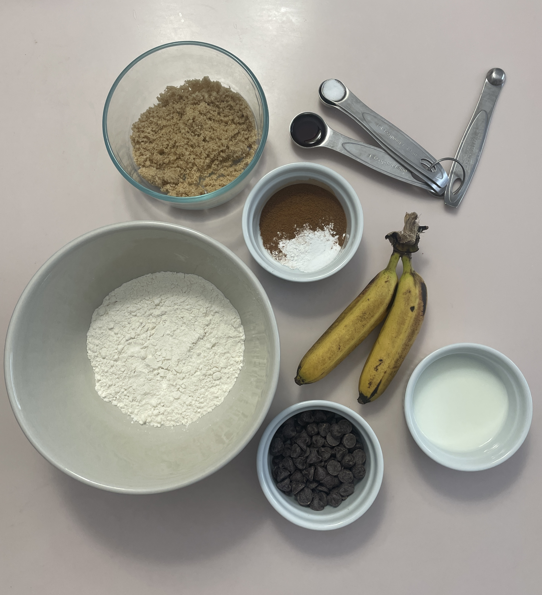
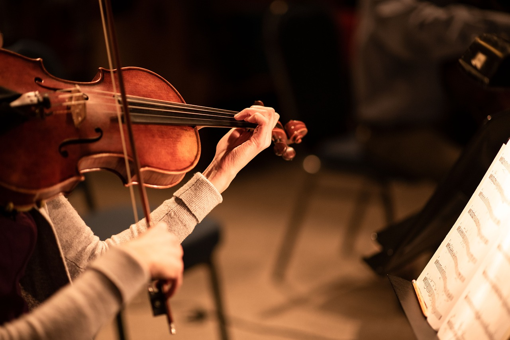

I like to play sports! Some of the sports I have done include tennis, swimming, soccer, track, and cross country. My favorite sport is soccer!
I like to bake! I starting baking about two years ago, and the first thing I ever made myself was macarons. Other things I like to make include cookies, cake, and muffins! My favorite kind of muffin is a pumpkin muffin.
I also enjoy creating artwork. My favorite art style is pencil drawing! Above is a video of some sketches I drew recently!
I love to read. My favorite genre is fantasy or historical fiction and my favorite novels are The Name of the Wind by Patrick Rothfuss and All the Light We Cannot See by Anthony Doerr.
I really like music! I play two instruments, the violin and the viola, and I used to play piano as well. I've been playing the violin for almost ten years and I've played the viola for two. I also enjoy listening to music every day.
.png)
Lastly, I like to code! This past year, I've used java to create fun projects at school. One of these projects was to make a game of chess. The code above, written in java, contains some methods I wrote to help play the game.